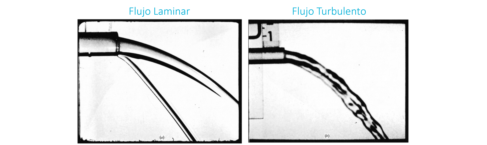
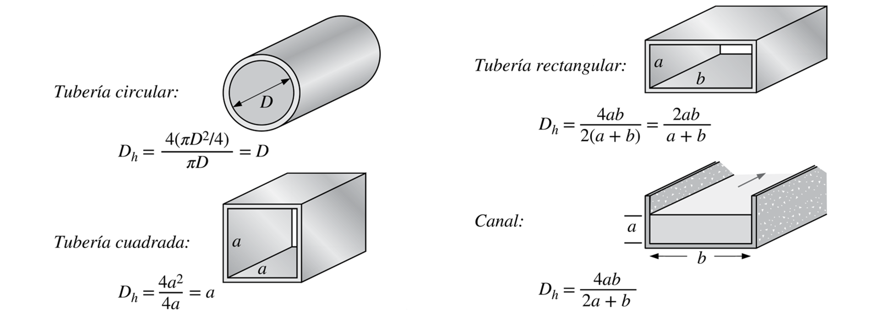
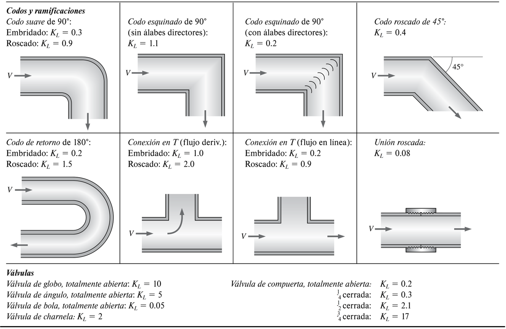
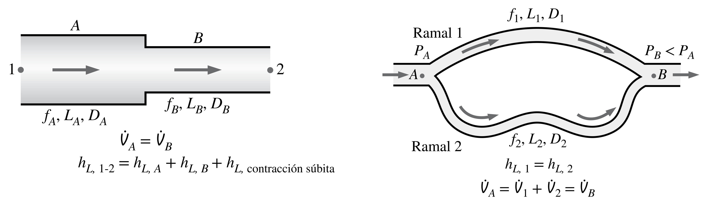

7. Conservación de energía y pérdida de carga en ductos#
7.1. Ecuación de conservación de energía#
A partir del teorema de transporte de Reynolds, y considerando la propiedad intensiva de la energía, \(\tilde{e}\), definida como la energía por unidad de masa (\(\mathrm{kJ/kg}\), por ejemplo), tenemos que la ecuación de conservación de energía aplicada a un volúmen de control es:
donde:
\(\dot{Q}\), tasa de transferecia calor recibida por el sistema (\(\mathrm{kW}\))
\(\dot{W}\), tasa de trabajo (potencia) entregada por el sistema (\(\mathrm{kW}\))
7.1.1. Energía del fluido (\(\tilde{e}\))#
Considera todas las formas de energía presentes en el fluido:
donde:
\(\tilde{e}_\mathrm{interna} = \tilde{u}\) (energía interna)
\(\tilde{e}_\mathrm{cinética} = \frac{V^2}{2}\) (energía cinética)
\(\tilde{e}_\mathrm{potencial} = gz\) (energía potencial)
\(V\) es la velocidad promedio del fluido, \(z\) es la altura medida desde un punto de referencia común, y \(g\) es la aceleración de gravedad.
7.1.2. Transferencia de calor (\(\dot{Q}\))#
Energía asociada al calor transferido por diferencia de temperaturas.
Notar que \(\dot{Q} < 0\) si el volúmen de control pierde calor
7.1.3. Transferencia de trabajo (\(\dot{W}\))#
Considera el trabajo entregado o recibido por el sistema.
Notar que \(\dot{W} < 0\) si el sistema recibe trabajo.
Distinguimos tres formas principales de trabajo:
Trabajo de eje (\(\dot{W}_\mathrm{eje}\)), asociado al trabajo intercambiado con maquinarias, por ejemplo, trabajo de bombas (\(\dot{W}_\mathrm{eje} < 0\)), turbinas (\(\dot{W}_\mathrm{eje} > 0\)), ventiladores (\(\dot{W}_\mathrm{eje} < 0\)), etc.
Trabajo por presiones (\(\dot{W}_\mathrm{presion}\)), asociado al trabajo de presiones del fluido. Actúa solo en las fronteras del volúmen de control:
\[\begin{equation*} \dot{W}_\mathrm{presion} = \int_{VC} P(\vec{V}\cdot\hat{n})dA \end{equation*}\]
Trabajo por fuerzas viscosas (\(\dot{W}_\mathrm{viscosas}\)), asociado a la disipación de energía por fricción como resultado de viscosidad del fluido (\(\dot{W}_\mathrm{viscosas}\) > 0).
7.2. Formulaciones prácticas#
La ecuación de la energía mostrada (4.1) no tiene mucho uso práctico en la ingeniería, debido a que los trabajos asociados a la presión y viscosidad están implícitos en la ecuación.
El primer paso es, entonces, determinar una expresión general que separe el trabajo de eje de otros. Una vez obtenida esta expresión, derivaremos otras expresiones prácticas para el análisis de problemas de ingeniería.
7.2.1. Forma general de la ecuación de conservación de energía#
Aplicando las ecuaciones comentadas anteriormente, la ecuación de conservación de energía es:
donde \(\tilde{h} = \tilde{u} + P/\rho\) es la entalpía o energía de flujo del fluido.
7.2.2. Otras formulaciones prácticas#
A partir de la ecuación (4.2) podemos derivar otras relaciones prácticas
Caso 1: Conservación de energía mecácica (isotérmico y adiabático)
En este caso, \(\dot{Q} = 0\) y la energía interna es constante. La ecuación de conservación de energía se simplifica a:
Caso 2: Valores promedio a la entrada y salida + caso 1
Caso 3: Propiedades constantes dentro del V.C + caso 1 + caso 2
Caso 4: Problema estacionario + caso 1 + caso 2 + caso 3
Notar que estas fórmulas consideran algunos casos particulares. Sin embargo, otros casos basados en combinaciones de los casos expuestos pueden ser facilmente derivadas a partir de esta discusión.
7.2.3. Ecuación de conservación de energía para una línea de flujo#
En base a los casos anteriores, y considerando (1) flujo incompresible y (2) volúmen de control con una única entrada y salida, tenemos:
donde \(h_\mathrm{i} = \frac{\dot{W}_\mathrm{i}}{\rho VA}\), (\(i=\) \(\mathrm{bomba}\), \(\mathrm{turbina}\) y \(L\)) es la altura de presión equivalente asociada a la energía transferida por una bomba, turbina o viscosidad, respectivamente.
El término \(h_\mathrm{L}\) se conoce como la pérdida de carga, asociada al pérdida irreversible de energía mecánica por fricción y viscosidad.
La ecuación (4.7) representa la forma más utilizada de la ecuación de conservación energía mecánica. Se expresa en forma de alturas hidrostáticas, ya que permite facilmente identificar los cambios de presión en el ducto.

7.2.4. Ecuación de Bernoulli#
Si aplicamos la ecuación anterior en un tramo de un ducto, donde \(h_\mathrm{bomba} = h_\mathrm{turbina} = 0\), y asumimos fluido ideal, es decir, sin fricciones por viscosidad (\(h_L = 0\)), tenemos la ecuación de Bernoulli.
Esta ecuación, aunque tiene poco uso práctico, permite comprender en términos simples la conservación de energía en un fluido producto de los cambios de presión, velocidad y elevación.

7.3. Flujo laminar y turbulento#
En la unidad introductoria mencionamos, brevemente, las caracteristicas que diferencian un flujo laminar de uno turbulento 
{kind=link}
La principal diferencia entre ambos está dada por las fluctuaciones en las propiedades del flujo.
Flujo laminar: flujo ordenado caracterizado por líneas suaves
Flujo turbulento: flujo desordenado, caracterizado por fluctuaciones en torno a valores promedio
La mejor forma de visualizar esto es mediante el experimento diseñado por Osborne Reynolds. En este experimento, un tubo con colorante es introducido en el centro de un ducto transparente por donde fluye agua.

Las fluctuaciones inducidas por la turbulencia se manifiestan mediante la mezcla del colorante con el agua.
En el siguiente podemos ver el famoso experimento.
7.3.1. Número de Reynolds#
Físicamente, las características de un flujo que definen si es laminar o turbulento son:
Viscosidad dinámica
Densidad
Velocidad del flujo
La relación entre estos tres parámetros está dado por el número de Reynolds
donde \(\nu = \mu/\rho,~(\mathrm{m^2/s})\) es la viscosidad cinemática y \(L_c\) es una longitud caractéristica relativa al problema estudiado.
En el caso de flujo en ductos circulares de diámetro \(D\), la longitud característica \(L_c = D\).
La clasificación está dada por el siguiente criterio
En el caso de ductos no circulares, utilizamos el diámetro hidráulico:
donde \(A\) es el área de la sección transversal del ducto y \(P_h\) es el perímetro mojado (perímetro del ducto en contacto con el fluido).
{kind=link}
7.4. Pérdida de carga#
Podemos diferenciar dos grandes grupos para la pérdida de carga en sistemas de tuberías:
Donde:
\(h_{L,\mathrm{mayor}}\): pérdidas mayores, asociadas a pérdidas por fricción en la longitud del ducto
\(h_{L,\mathrm{menor}}\): pérdidas menores, asociadas a pérdidas por fricción en singularidades, como: válvulas, codos, cambios de sección, etc.
El término “mayor” y “menor” no está directamente relacionado con la magnitud de cada pérdida. Es decir, es posible encontrar casos donde las pérdidas menores sean superiores a las mayores, y viceversa.
7.4.1. Pérdida de carga en la longitud (mayores)#
Es posible demostrar que, para ductos circulares de diámetro \(D\), la pérdida de carga entre dos puntos separados por una longitud \(L\) está dada por la ecuación de Darcy-Weisbach:
donde \(f\) es el factor de fricción de Darcy, y \(V\) es la velocidad promedio del flujo en el ducto
La fórmula para el factor de fricción depende de si el flujo es laminar o turbulento.
7.4.1.1. Factor de fricción para flujo laminar#
En el caso de flujo laminar, el factor de fricción está dado por:
Para ductos no circulares, usamos las siguientes relaciones en función del diámetro hidráulico (\(D_h\))

7.4.1.2. Factor de fricción para flujo turbulento#
Para flujo en transición y turbulento, el factor de fricción depende de la rugosidad del ducto, \(\epsilon\). Esto porque la inestabilidad del flujo será mayor cuando la rugosidad aumenta.
El factor de fricción, así, depende de \(\mathrm{Re}_D\) y la rugosidad relativa \(\epsilon_R =\epsilon/D\), y se define por ecuación de Colebrook:
Esta ecuación es no lineal y su solución, por lo tanto, requiere de métodos númericos.
Una alternativa a la ecuación de Colebrook es el diagrama de Moody.

Otra alternativa es utilizar relaciones empíricas que expresan \(f\) de forma explicita, pero aproximada. Por ejemplo:
7.4.2. Pérdidas de carga por singularidades (menores)#
Estas pérdidas están dadas por singularidades, tales como: cambios de sección en el flujo, cambios de dirección en codos, válvulas, etc.
La relación universal es:
donde \(K_i\) y \(V_i\) son el coeficiente de pérdida y la velocidad en la singularidad \(i\).
Notar que el valor de \(V_i\) depende del tipo de singularidad.
A continuación mostramos algunos ejemplos
Singularidad a la entrada y salida

Expansión y contracción brusca

Codos y “tes”
{kind=link}
Válvulas

7.4.3. Tuberías en serie y paralelo#
Los sistemas de cañerías a menudo consideran sistemas conectados en série y paralelo. En este caso, las relaciones para caudal y diferencia de presiones se ajustan como indica la figura:
{kind=link}
7.5. Referencias#
Çengel Y. A. y Cimbala M. J. Mecánica de Fluidos: Fundamentos y Aplicaciones, 4ta Ed., McGraw Hill, 2018
Capitulo 5: Ecuaciones de Bernoulli y de la energía
Capítulo 8: Flujo en tuberías
White F. M. Mecánica de Fluidos, 5ta Ed., McGraw Hill, 2004
Capítulo 3.6: Ecuación de la energía
Capítulo 3.7: Flujo sin fricción: La ecuación de Bernoulli
Capítulo 6: Flujo viscoso en conductos